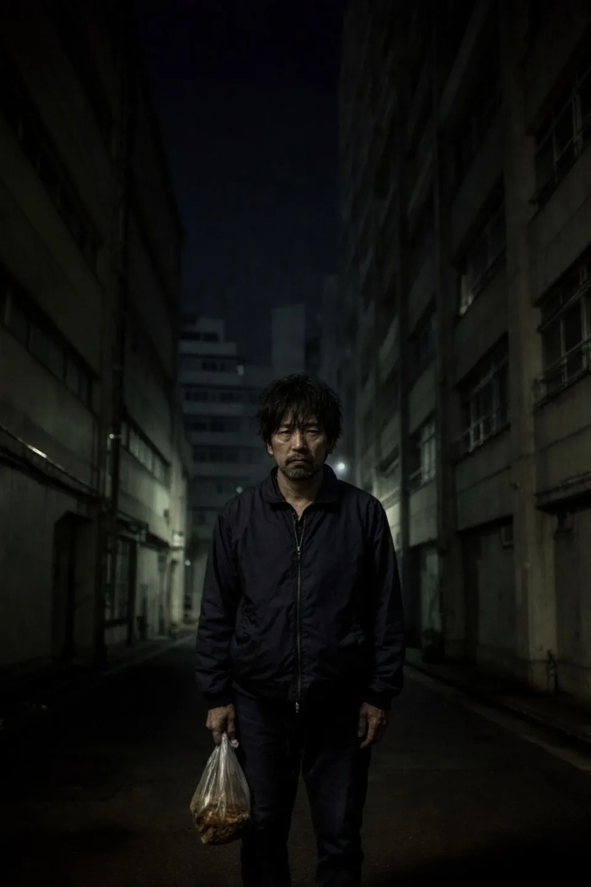

01 / 03
帰る場所が、
見つからない夜。
その不安を、一人で抱えなくていい。
住まいから、再出発を支える。
安心して暮らせる場所から、次の一歩へ。
住まい・制度・就労をつなぎ、再出発に伴走します。
初回相談無料。相談だけでも大丈夫です。
ストーリー STORY

01 / 03
その不安を、一人で抱えなくていい。

02 / 03
住まいから、再出発を支えます。

03 / 03
人は、必ずやり直せる。
写真は支援の考え方を伝えるイメージです。
支援内容 OUR SUPPORT
現在の主軸は、一般社団法人相模原ダルクに通所する約60人の利用者のナイトケアハウス運営です。一時避難の住まいも用意し、相模原ダルクの就労・家族支援とつながりながら、安心して暮らせる環境を支えています。
LANGUAGE SUPPORT
日本語・英語・韓国語・タガログ語・タイ語に対応。通訳・同行サポートも常時可能です。その他の言語もご相談ください。